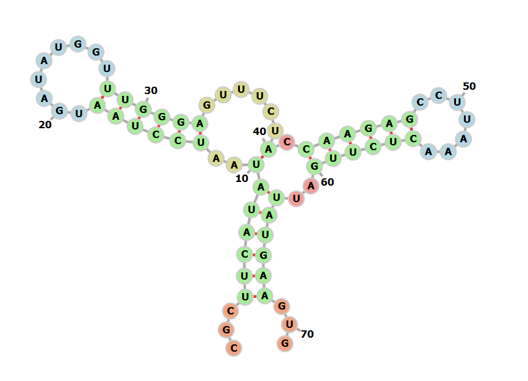

前言
单链 DNA 或 RNA 会自发配对，形成茎环结构的双链，就像 tRNA 那样。基于第一性原理，我们可以完全由算法计算其二级结构形成的情况，这篇文章记录了工具使用与结果解读。
工具
我最常使用的是一个叫做 RNAfold Webserve 的在线工具，我们直接输入单链就可以进行二级结构的检测，虽然也有离线版，但是我目前还没有用过，来日更新。
结果解读
Minimum Free Energy Prediction（最小自由能预测结果）
这一板块基于经典的 Zuker 算法，计算并在热力学最稳定（即自由能 $\Delta G$ 最低）状态下的单一最优 RNA 二级结构。
Thermodynamic Ensemble Prediction（热力学群体预测结果）
在生理温度下，RNA 并不是死板地固定在一个结构上，而是在多个能量接近的构象之间动态平衡。这一板块基于 McCaskill 模配分函数算法，从统计力学角度评估全构象系综。
点括号标记法
这是记录二级结构最简单的文本语言，用 . 表示未配对的单链碱基，用 ( 和 ) 表示互补配对的碱基（如 (((...)))）。
点括号标记法必须与实际序列搭配使用，就像 FASTA 文件和 GTF 文件一样，例如：
>molecule_name
CGCUUCAUAUAAUCCUAAUGAUAUGGUUUGGGAGUUUCUACCAAGAGCCUUAAACUCUUGAUUAUGAAGUG
...(((((((..((((((.........))))))......).((((((.......))))))..))))))...借助 Forna 可视化：

Forna 是一个很好用的可视化前端程序，强烈建议你也去试试。
dp.eps 文件
该文件在 Results for thermodynamic ensemble prediction 下的 dot plot 数据 ESP 文件下载处，下载后得到 dp.eps 文件，它记录了配对概率点图矢量文件，本质就是个 TXT，我们可以用记事本打开它。
该文件没有直接具体的 $\Delta G$ 能量值，因为它是基于统计学上的分析，其配对概率 $p_{ij}$ 就可以说明配对的强弱性。
我们可以直接在浏览器中进行图像预览。
可视化
我们可以参考这篇文章进行拱门图绘制：